자동차정비기사 (2022-04-24 기출문제)
1과목: 일반기계공학
1. 유압기기 요소에서 길이가 단면 치수에 비해서 비교적 긴 죔구를 의미하는 용어는?
- 램
- 초크
- 오리피스
- 스풀
(정답률: 40%)

2. 그림과 같은 균일분포하중이 작용하는 보의 최대 처짐량을 구하는 식으로 옳은 것은? (단, W : 균일분포하중, L : 보의 길이, E : 세로탄성계수, I : 단면 2차 모멘트이다.)
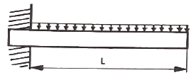
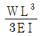
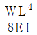
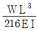
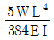
(정답률: 37%)
3. 지름이 100mm인 유압 실린더의 이론 송출량이 830 cm3/s, 추력이 3kgf일 때 이 유압실린더의 속도(cm/s)는 얼마인가? (단, 펌프의 용적효율은 90% 이다.)
- 7.5
- 8.5
- 9.5
- 10.5
(정답률: 20%)
4. 코일의 유효권수 12, 코일의 평균지름 40mm, 소선의 지름 6mm인 압축 코일 스프링에 30N의 외력이 작용할 때, 변위(mm)는 약 얼마인가? (단, 코일 스프링 재질의 전단탄성계수는 8×103 N/mm2 이다.)
- 9.35
- 17.78
- 22.70
- 33.46
(정답률: 59%)
5. 철강 시험편은 오스테나이트화한 후 시험편의 한 쪽 끝에 물을 분사하여 퀜칭하는 표준 시험법은?
- 붕화
- 복탄
- 조미니
- 마르에이징
(정답률: 10%)
6. 축에 직각인 하중을 지지하는 베어링은?
- 피벗 베어링
- 칼라 베어링
- 레이디얼 베어링
- 스러스트 베어링
(정답률: 20%)
7. 두 축이 만나지도 않고, 평행하지도 않는 기어는?
- 웜과 웜 기어
- 베벨 기어
- 헬리컬 기어
- 스퍼 기어
(정답률: 20%)
8. 호칭 지름이 50mm, 피치가 2mm인 미터 가는 나사가 2줄 왼나사로 암나사 등급이 6일 때 KS 나사 표시방법으로 옳은 것은?
- 왼 2줄 M50×2-6g
- 왼 2줄 M50×2-6H
- 2줄 M50×2-6g
- 2줄 M50×2-6H
(정답률: 20%)
9. 지름 8cm, 길이 200cm 인 연강봉에 7000N 인장하중이 작용하였을 때 변형량은? (단, 탄성한도 내에 있다고 가정하며, 세로탄성계수는 2.1×106 N/cm2 이다.)
- 0.13mm
- 0.52mm
- 0.33mm
- 0.62mm
(정답률: 10%)
10. 다음 중 버니어 캘리퍼스로 측정할 수 없는 것은?
- 구멍의 내경
- 구멍이 깊이
- 축의 편심량
- 공작물의 두께
(정답률: 47%)
11. 드릴링 머신에서 너트나 볼트의 머리와 접촉하는 면을 평면으로 파는 작업은?
- 리밍
- 보링
- 태핑
- 스폿 페이싱
(정답률: 20%)
12. 리벳이음에서 리벳의 지름이 d, 피치가 p일 때 판 효율을 구하는 식으로 옳은 것은?
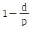
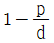
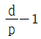
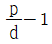
(정답률: 42%)
13. 일반적으로 단면이 각형이며 스터핑 박스에 채워 넣어 사용되어지는 패킹의 총칭은?
- 브레이드 패킹
- 코튼 패킹
- 금속박 패킹
- 글랜드 패킹
(정답률: 19%)
14. 정밀 주조법의 일종으로 정밀한 금형에 용융금속을 고압, 고속으로 주입하여 주물을 얻는 방법으로 Al합금, Mg합금 등에 주로 사용되는 주조법은?
- 원심주조법
- 다이캐스팅
- 셸 몰드법
- 연속주조법
(정답률: 50%)
15. 알루미늄 합금인 두랄루민의 표준성분에 해당하지 않는 원소는?
- Co
- Cu
- Mg
- Mn
(정답률: 42%)
16. 비틀림을 받는 원형 단면 봉에서 발생하는 비틀림 각에 대한 설명으로 옳은 것은?
- 봉의 길이에 반비례한다.
- 전단 탄성계수에 반비례한다.
- 비틀림 모멘트에 반비례한다.
- 극단면 2차 모멘트에 반비례한다.
(정답률: 19%)
17. 그림과 같이 용접이음을 하였을 때 굽힘응력을 계산하는 식으로 옳은 것은? (단, L : 용접 길이, t : 용접치수(용접 판두께), ℓ : 용접부에서 하중 작용선까지 거리, W : 작용하중이다.)
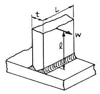
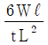
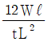
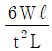
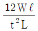
(정답률: 34%)
18. 유압 회로 구성에 사용되는 어큐물레이터의 용도가 아닌 것은?
- 주 동력원
- 비상동력원
- 누설 보상기
- 유압 완충기
(정답률: 20%)
19. 다음 중 나사산을 가공하는데 적합한 가공법은?
- 전조
- 압출
- 인발
- 압연
(정답률: 42%)
20. 하중을 물체에 작용하는 상태에 따라 분류할 때 해당하지 않는 것은?
- 인장하중
- 압축하중
- 전단하중
- 교번하중
(정답률: 59%)
2과목: 기계열역학
21. 이상적인 증기 압축 냉동 사이클의 과정은?
- 정적방열과정→등엔트로피 압축과정→정적증발과정→등엔탈피 팽창과정
- 정압방열과정→등엔트로피 압축과정→정압증발과정→등엔탈피 팽창과정
- 정적증발과정→등엔트로피 압축과정→정적방열과정→등엔탈피 팽창과정
- 정압증발과정→등엔트로피 압축과정→정압방열과정→등엔탈피 팽창과정
(정답률: 10%)
22. 공기 표준 사이클로 작동되는 디젤 사이클의 이론적인 열효율은 약 몇 % 인가? (단, 비열비는 1.4, 압축비는 16이며, 체절비(cut-off ratio)는 1.8 이다.)
- 50.1
- 53.2
- 58.6
- 62.4
(정답률: 10%)
23. 어떤 물질 1000kg이 있고 부피는 1.404m3 이다. 이 물질의 엔탈피가 1344.8 kJ/kg 이고 압력이 9MPa 이라면 물질의 내부에너지는 약 몇 kJ/kg 인가?
- 1332
- 1284
- 1048
- 875
(정답률: 19%)
24. 출력 10000kW 의 터빈 플랜트의 시간당 연료소비량이 5000kg/h 이다. 이 플랜트의 열효율은 약 몇 % 인가? (단, 연료의 발열량은 33440kJ/kg 이다.)
- 25.4%
- 21.5%
- 10.9%
- 40.8%
(정답률: 19%)
25. 다음 압력값 중에서 표준대기압(1 atm)과 차이(절대값)가 가장 큰 압력은?
- 1 MPa
- 100 kPa
- 1 bar
- 100 hPa
(정답률: 30%)
26. -15℃와 75℃의 열원 사이에서 작동하는 카르노 사이클 열펌프의 난방 성능계수는 얼마인가?
- 2.87
- 3.87
- 6.16
- 7.16
(정답률: 42%)
27. 그림과 같이 작동하는 냉동사이클(압력(P) - 엔탈피(h) 선도)에서 h1 = h4 = 98 kJ/kg, h2 = 246kJ/kg, h3 = 298kJ/kg 일 때 이 냉동사이클의 성능계수(COP)는 약 얼마인가?
- 4.95
- 3.85
- 2.85
- 1.95
(정답률: 10%)
28. 열교환기를 흐름 배열(flow arrangement) 에 따라 분류할 때 그림과 같은 형식은?
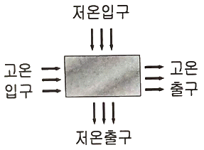
- 평행류
- 대향류
- 병행류
- 직교류
(정답률: 20%)
29. 피스톤-실린더 내부에 존재하는 온도 150℃, 압력 0.5MPa의 공기 0.2kg은 압력이 일정한 과정에서 원래 체적의 2배로 늘어난다. 이 과정에서의 일은 약 몇 kJ 인가? (단, 공기의 기체상수가 0.287 kJ/(kg·K)인 이상기체로 가정한다.)
- 12.3
- 16.5
- 20.5
- 24.3
(정답률: 10%)
30. 온도가 20℃, 압력은 100kPa인 공기 1kg을 정압과정으로 가열 팽창시켜 체적을 5배로 할 때 온도는 약 몇 ℃ 가 되는가? (단, 해당 공기는 이상기체이다.)
- 1192℃
- 1242℃
- 1312℃
- 1442℃
(정답률: 50%)
31. 그림과 같은 열기관 사이클이 있을 때 실제 가능한 공급열량(QH)과 일량(W)은 얼마인가? (단, QL은 방열열량이다.)
- QH = 100 kJ, W = 80 kJ
- QH = 110 kJ, W = 80 kJ
- QH = 100 kJ, W = 90 kJ
- QH = 110 kJ, W = 90 kJ
(정답률: 30%)
32. 3kg의 공기가 400K에서 830K까지 가열될 때 엔트로피 변화량은 약 몇 kJ/K 인가? (단, 이 때 압력은 120kPa에서 480kPa까지 변화하였고, 공기의 정압비열은 1.0⑤ kJ/(kg·K), 공기의 기체상수는 0.287kJ/(kg·K) 이다.)
- 0.584
- 0.719
- 0.842
- 1.007
(정답률: 10%)
33. 밀폐 시스템에서 압력(P)이 아래와 같이 체적(V)에 따라 변한다고 할 때 체적이 0.1m3에서 0.3m3로 변하는 동안 이 시스템이 한 일은 약 몇 J 인가? (단, P의 단위는 kPa, V의 단위는 m3 이다.)
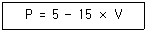
- 200
- 400
- 800
- 1600
(정답률: 42%)
34. 그림과 같이 선형 스프링으로 지지되는 피스톤-실린더 장치 내부에 있는 기체를 가열하여 기체의 체적이 V1에서 V2로 증가하였고, 압력은 P1에서 P2로 변화하였다. 이때 기체가 피스톤에 행한 일을 옳게 나타낸 식은? (단, 실린더와 피스톤 사이에 마찰은 무시하며 실린더 내부의 압력(P)은 실린더 내부 부피(V)와 선형관계(P=aV, a는 상수)에 있다고 본다.)
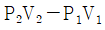
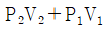
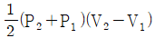
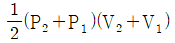
(정답률: 20%)
35. 어떤 기체 동력장치가 이상적인 브레이턴 사이클로 다음과 같이 작동할 때 이 사이클의 열효율은 약 몇 % 인가? (단, 온도(T)-엔트로피(s) 선도에서 T1 = 30℃, T2 = 200℃, T3 = 1060℃, T4 = 160℃ 이다.)
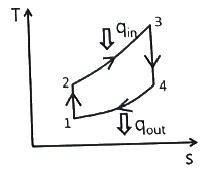
- 81%
- 85%
- 89%
- 76%
(정답률: 37%)
36. 질량이 m으로 동일하고, 온도가 각각 T1, T2(T1 ＞ T2)인 두 개의 금속덩어리가 있다. 이 두 개의 금속덩어리가 서로 접촉되어 온도가 평형상태에 도달하였을 때 엔트로피 변화량(△S)은? (단, 두 금속의 비열은 c로 동일하고, 다른 외부로의 열교환은 전혀 없다.)
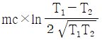
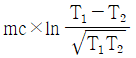
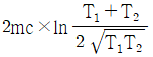
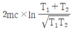
(정답률: 20%)
37. 0℃ 얼음 1kg이 열을 받아서 100℃ 수증기가 되었다면, 엔트로피 증가량은 약 몇 kJ/K 인가? (단, 얼음의 융해열은 336 kJ/kg이고, 물의 기화열은 2264 kJ/kg이며, 물의 정압비열은 4.186 kJ/(kg·K) 이다.)
- 8.6
- 10.2
- 12.8
- 14.4
(정답률: 10%)
38. 압력 1MPa, 온도 50℃인 R-134a의 비체적의 실제 측정값이 0.021796 m3/kg 이었다. 이상기체 방정식을 이용한 이론적인 비체적과 측정값과의 오차(=
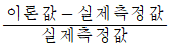
)는 약 몇 % 인가? (단, R-134a 이상기체의 기체상수는 0.0815 kPa·m3/(kg·K) 이다.)- 5.5%
- 12.5%
- 20.8%
- 30.8%
(정답률: 10%)
39. 시간당 380000kg의 물을 공급하여 수증기를 생산하는 보일러가 있다. 이 보일러에 공급하는 물의 비에탈피는 830 kJ/kg이고, 생산되는 수증기의 비엔탈피는 3230 kJ/kg이라고 할 때, 발열량이 kJ/kg 인 석탄을 시간당 34000kg씩 보일러에 공급한다면 이 보일러에 효율은 약 몇 % 인가?
- 66.9%
- 71.5%
- 77.3%
- 83.8%
(정답률: 30%)
40. 밀폐 시스템에서 가역정압과정이 발생할 때 다음 중 옳은 것은? (단, U는 내부에너지, Q는 열량, H는 엔탈피, S는 엔트로피, W는 일량을 나타낸다.)
- dH = dQ
- dU = dQ
- dS = dQ
- dW = dQ
(정답률: 37%)
3과목: 자동차기관
41. 전자제어 연료분사장치의 인젝터에서 연료 분사량을 결정하는 요인이 아닌 것은?
- 노즐의 지름
- 연료의 압력
- 인젝터의 재질
- 니들밸브가 열려 있는 시간
(정답률: 84%)
42. 전자제어 디젤엔진의 연료뷴사 중 엔진의 소음과 진동을 줄이고 연소압력의 완만한 상승을 위한 분사는?
- 부분분사
- 예비분사
- 순차분사
- 주분사
(정답률: 84%)
43. 터보 과급 장치에서 타임래그(time lag)에 대한 설명으로 옳은 것은?
- 터보가 작동되는 동안 터빈의 회전수와 압축기의 회전수의 차이를 말한다.
- 공회전에서는 터보가 작동되지 않고 고속 주행 중에만 작동되는 현상을 말한다.
- 가속페달을 밟았을 때 배기가스가 터빈과 압축기를 돌려 출력이 발생하는 시점까지의 시간차를 말한다.
- 가속페달을 밟고 난 후에 터보에 작동되어 가속페달을 밟지 않았는데도 출력효과가 나타나는 현상을 말한다.
(정답률: 75%)
44. 실린더 벽 마모량을 측정할 때 사용하는 측정기로 적절하지 않은 것은?
- 다이얼 게이지
- 내측 마이크로미터
- 실린더 보어 게이지
- 텔레스코핑 게이지와 외측 마이크로미터
(정답률: 62%)
45. 피스톤 링의 플러터(flutter) 현상을 방지하는 방법으로 틀린 것은?
- 고온·고압에 견딜 수 있도록 내열성이 양호할 것
- 실린더 벽에 상처를 주지 않도록 장력이 낮을 것
- 실린더와의 접촉을 견딜 수 있또록 내마멸성이 양호할 것
- 연소열을 실린더 벽으로 전달하여 열전도가 양호할 것
(정답률: 67%)
46. 4행정 사이클 엔진에서 실린더 내에 흡입되는 흡입공기량이 감소하는 이유로 틀린 것은?
- 흡입 및 배기 밸브의 개폐시기 조정이 불완전할 때
- 흡입 및 배기의 관성이 피스톤 운동을 따르지 못할 때
- 피스톤 링, 밸브 등의 마모에 의하여 가스누설이 발생할 때
- 흡입압력이 대기압력보다 높고, 실린더 온도가 대기온도보다 낮을 때
(정답률: 67%)
47. 어느 기관의 피스톤 행정이 120mm이고, 피스톤링이 마찰력이 3kgf, 엔진회전수가 2000rpm 일 때 피스톤의 평균속도와 피스톤링에 의한 손실마력은?
- 평균속도 4m/s, 손실마력 0.26PS
- 평균속도 8m/s, 손실마력 0.32PS
- 평균속도 10m/s, 손실마력 0.66PS
- 평균속도 12m/s, 손실마력 0.82PS
(정답률: 54%)
48. 디젤엔진에서 착화지연에 영향을 주는 요소로 거리가 먼 것은?
- 공연비
- 연료 입자의 크기
- 연료의 분무 상태
- 연소실 내 공기의 온도와 압력
(정답률: 40%)
49. 내연기관의 열효율이 30% 이고, 출력이 80PS, 연료의 저위발열량이 10000 kcal/kg 일 때 1시간 동안의 연료소비량은?
- 약 8.5 kg/h
- 약 10.1 kg/h
- 약 12.6 kg/h
- 약 16.9 kg/h
(정답률: 10%)
50. 가솔린엔진의 파워밸런스 시험을 할 때 판정방법으로 옳은 것은?
- 진공도의 변화는 각 실린더간에10% 이내의 차이여야 한다.
- HC의 변화는 각 실린더간에 10% 이내의 차이여야 한다.
- O2의 변화는 각 실린더간에 5% 이내의 차이여야 한다.
- 엔진회전수의 변화는 각 실린더간에 3% 이내의 차이여야 한다.
(정답률: 40%)
51. LPG 자동차에서 안전밸브가 장착된 충전밸브의 역할이 아닌 것은?
- 연료의 충전
- 과충전 방지
- 과류 방지
- 용기의 파열 및 폭발 방지
(정답률: 20%)
52. 디젤 연료의 착화성을 나타내는 세탄가는?
- 세탄과 이소헵탄의 체적혼합비
- 노말 헵탄과 이소헵탄의 체적혼합비
- α-미텔나프탈렌과 이소옥탄의 체적혼합비
- 세탄과 [α-메틸나프탈렌+세탄]의 체적혼합비
(정답률: 75%)
53. 전자제어 가솔린엔진 연료 분사장치에서 연료계통에 대한 설명으로 틀린 것은?
- 인젝터는 ECU에 의해 제어된다.
- 연료펌프는 DC모터를 많이 사용한다.
- 자동차 주행속도에 따라 연료압력 조절기의 압력을 변화시킨다.
- 연료펌프의 체크밸브는 연료라인에 잔압을 형성시킨다.
(정답률: 28%)
54. 자동차 기관에서 단행정 기관의 장점이 아닌 것은?
- 흡·배기 밸브의 지름을 크게 할 수 있어 흡·배기 효율을 높일 수 있다.
- 피스톤의 평균속도를 높이지 않고 기관의 회전속도를 빠르게 할 수 있다.
- 기관의 높이를 낮게 할 수 있다.
- 직렬형 기관인 경우 기관의 길이가 짧아진다.
(정답률: 50%)
55. 크랭크각 센서에서 포토 다이오다가 ON될 때 단자 출력 전압(V)은 약 얼마인가?
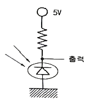
- 0
- 5
- 10
- 12
(정답률: 30%)
56. 캐니스터에 포집된 연료증발가스를 조절하는 장치는?
- PCSV(Purge Control Solenoid Valve)
- PCV(Positive Crankcase Ventilation)
- EGR(Exhaust Gas Recirculation)
- ACV(Air Control Valve)
(정답률: 75%)
57. 가솔린엔진의 유해 배출가스인 질소산화물 발생 농도에 관한 설명으로 틀린 것은?
- 기관의 압축비가 낮은 편이 발생농도가 낮다.
- 냉각수 온도가 낮은 편이 발생농도가 낮다.
- 혼합비가 농후한 편이 발생농도가 낮다.
- 점화시기가 빠른 편이 발생농도가 낮다.
(정답률: 59%)
58. 제동마력이 150PS, 엔진회전수가 2000rpm일 때 엔진의 회전력(kgf·m)은 약 얼마인가?
- 5.6
- 13.3
- 53.7
- 95.5
(정답률: 50%)
59. 전자제어 가솔린엔진에서 지르코니아 방식 산소센서에 대한 설명으로 틀린 것은?
- 지르코니아 소자에 백금으로 코팅되어 있다.
- 배기가스 중에 산소가 적으면 약 900mV 정도의 전압이 출력된다.
- 배기가스 중에 공연비가 희박하면 약 1~4.5V 의 전압이 출력된다.
- 산소 농도를 검출하기 위해서는 일반적으로 산소센서의 온도가 약 300℃ 이상이 되어야 한다.
(정답률: 30%)
60. 기관의 냉각장치에서 부동액의 구비조건으로 틀린 것은?
- 냉각수와 잘 혼합할 것
- 비등점이 낮을 것
- 침전물인 없을 것
- 부식성이 없을 것
(정답률: 67%)
4과목: 자동차새시
61. 선회 시 코너링 포스에 영향을 미치는 것으로 거리가 먼 것은?
- 제동능력
- 현가방식
- 타이어의 분담하중
- 현가스프링의 롤링 강성
(정답률: 67%)
62. ABS 제어채널 방식 중 주로 후륜구동 차량에 적합하며, 후륜 측의 유압을 동시에 제어하는 것은?
- 4센서 1채널
- 2센서 2채널
- 4센서 3채널
- 3센서 4채널
(정답률: 20%)
63. 고속주행 시미(shimmy)현상이 발생하는 주요 원인으로 옳은 것은?
- 스프링 정수가 적을 때
- 링키지 연결부가 헐거울 때
- 타이어의 공기압력이 낮을 때
- 타이어가 동적 불평형일 때
(정답률: 67%)
64. 도로 차량-하이브리드 자동차 용어(KS R 0121)의 동력 전달 구조에 따른 분류에서 다음이 설명하는 것은?
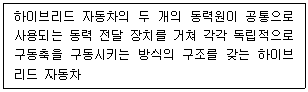
- 직렬형
- 병렬형
- 동력분기형
- 복합형
(정답률: 59%)
65. ABS(Anti-lock Brake System) 제동장치는 제동 시 휠 스피드 센서와 유압장치를 이용하여 무엇을 전자적으로 조절할 수 있는가?
- 변속비
- 종감속비
- 슬립율
- 전달율
(정답률: 70%)
66. 부동 캘리퍼형 디스크 브레이크의 단점이 아닌 것은?
- 피스톤의 이동량을 크게 하여야 한다.
- 먼지 등에 의해 이동이 원활하지 않게 되기 쉽다.
- 실린더가 통풍이 잘되는 위치에 있어 베이퍼 록 현상이 없다.
- 패드의 편마멸이 되기 쉽다.
(정답률: 30%)
67. 단순 유성기어 장치에서 링기어가 출력, 선기어가 구동, 캐리어가 고정되었다면 링기어의 회전 상태는?
- 증속
- 감속
- 역방향 증속
- 역방향 감속
(정답률: 39%)
68. 자동차 차대번호 등의 운영에 관한 규졍성 국가공통부호 배정자 및 한국교통안전공단에서 표기하는 차대번호 중 사용연료 종류별 표기부호로 틀린 것은?
- B : 연료장치
- C : CNG
- L : LNG
- S : 태양열
(정답률: 20%)
69. 공기식 현가장치의 특징이 아닌 것은?
- 구조가 간단하고 정비하기 쉽다.
- 하중에 상관없이 차체의 높이를 항상 일정하게 유지할 수 있다.
- 하중에 상관없이 스프링의 고유 진동수를 일정하게 유지할 수 있다.
- 공기 스프링 자체에 감쇄성이 있어 작은 진동을 흡수하는 효과가 있다.
(정답률: 62%)
70. 자동변속기 오일펌프 상태 및 클러치의 슬립 등의 이상 유무를 유압계로 측정하여 판정하는데 사용하는 압력은?
- 릴리프 압력
- 매뉴얼 압력
- 거버너 압력
- 라인 압력
(정답률: 50%)
71. 유압식 전자제어 동력조향장치의 특성에 대한 설명으로 틀린 것은?
- 차속센서가 고장일 경우 중속 조건으로 조향력을 일정하게 유지한다.
- 자동차가 고속일수록 조향력을 가볍게 하여 운전성을 향상시킨다.
- 정차 시 조향력을 가볍게 하여 조향 성능을 향상시킨다.
- 중속 이상에서 급조향 시 발생되는 순간적 조향 휨 걸림(catch up) 현상을 방지한다.
(정답률: 59%)
72. 자동차에서 동력을 전달하는 변속기의 필요성이 아닌 것은?
- 엔진 시동 시 무부하 상태로 한다.
- 엔진의 회전속도를 변환시켜 전달한다.
- 엔진의 연료소비율을 증대시킨다.
- 구동륜의 회전방향을 변환시킨다.
(정답률: 40%)
73. 그림과 같은 Gear Box에서 입력축 회전속도 1400rpm, 토크 75kgf·m 일 때 입력마력과 출력축의 회전속도는? (단, 그림의 숫자는 기어의 잇수이다.)
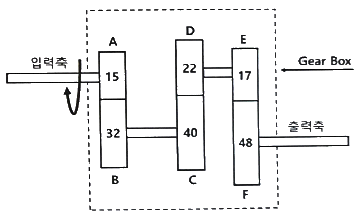
- 입력마력 146.65 PS
출력축 회전속도 422.59 rpm - 입력마력 115.89 PS
출력축 회전속도 422.59 rpm - 입력마력 146.65 PS
출력축 회전속도 362.22 rpm - 입력마력 115.89 PS
출력축 회전속도 362.22 rpm
(정답률: 20%)
74. 타이어 펑크 시 응급적으로 주행 가능한 안전 타이어는?
- 편평 타이어
- 스노우 타이어
- 런 플랫 타이어
- 레이디얼 타이어
(정답률: 67%)
75. 엔진의 회전속도가 일정할 때 토크컨버터의 회전력이 가장 큰 경우는?
- 터빈속도가 느릴 때
- 펌프의 속도가 느릴 때
- 펌프와 터빈의 속도가 같을 때
- 스테이터가 회전하고 있을 때
(정답률: 46%)
76. 차량중량 850kgf, 후축증 400kgf인 자동차가 제동력 검사를 받을 때 주차 브레이크 제동력 계산 값과 판정 결과로 옳게 짝지어진 것은? (단, 후륜 좌측제동력 100kgf, 후륜 우측제동력 120kgf 이다.)
- 2.35%, 불량
- 5.00%, 불량
- 25.88%, 양호
- 55.00%, 양호
(정답률: 46%)
77. 유압식 브레이크장치에서 베이퍼 록 방지대책이 아닌 것은?
- 마스터 실린더의 피스톤 리턴스프링을 교환하여 잔압을 올린다.
- 비등점이 낮은 브레이크 오일을 사용한다.
- 브레이크 드럼과 라이닝 간극을 조정한다.
- 가급적 긴 내리막같은 엔진 브레이크를 사용한다.
(정답률: 67%)
78. 수동변속기 차량에서 변속을 할 때마다 기어 충돌 소음이 발생하는 원인으로 옳은 것은?
- 싱크로나이저의 결함
- 클러치판의 과대 마모
- 2~3단 변속기어의 손상
- 포핏 스프링의 장력부족 및 볼의 마모
(정답률: 50%)
79. 조향장치에서 드래그 링크에 대한 설명으로 옳은 것은?
- 볼 이음과의 접속부가 헐거우면 조향휠의 유격이 크게 된다.
- 드래그 링크의 결합이 불량하면 캠버가 틀어지게 된다.
- 조향 휠에 유격이 생기는 것을 방지하는 작용을 한다.
- 드래그 링크에 굽힘이 있으면 조향휠의 유격이 크다.
(정답률: 30%)
80. 전자제어 구동력 조절장치(TCS)에서 트랙션 컨트롤 유닛(TCU)의 기능으로 틀린 것은?
- 선회하면서 가속 시 트레이스 제어
- 미끄러운 노면에서 제동 시 슬립 제어
- 미끄러운 노면에서 가속 시 슬립 제어
- 미끄러운 노면에서 출발 시 슬립 제어
(정답률: 50%)
5과목: 자동차전기
81. 자동차에서 주로 사용하는 직권식 시동 전동기의 특징으로 틀린 것은?
- 전기자 코일과 계자 코일이 직렬로 연결되었다.
- 기동 회전력이 크므로 시동 전동기에 쓰인다.
- 부하에 따라 회전속도의 변화가 크다.
- 전기자 전류는 코일에 발생하는 역기전력에 비례한다.
(정답률: 40%)
82. 하이브리드 자동차의 컨버터(Converter)와 인버터(Inverter)의 전기특성 표현으로 옳은 것은?
- 컨버터(Converter) : AC에서 DC로 변환,
인버터(Inverter) : DC에서 AC로 변환 - 컨버터(Converter) : DC에서 AC로 변환,
인버터(Inverter) : AC에서 DC로 변환 - 컨버터(Converter) : AC에서 AC로 변환,
인버터(Inverter) : DC에서 DC로 변환 - 컨버터(Converter) : DC에서 DC로 변환,
인버터(Inverter) : AC에서 AC로 변환
(정답률: 67%)
83. 비사업용 자동차의 정기검사 중 등화장치 검사기준에 대한 설명으로 틀린 것은? (단, 자동차관리법령상에 의한다.)
- 변환빔의 광도는 3천칸델라 이상일 것
- 정위치에 견고히 부착되어 작동에 이상이 없을 것
- 컷오프선의 연장선은 좌측 하향일 것
- 설치 높이가 1m 초과일 경우 변환빔의 진폭은 –1.0 ~ -3.0% 이내일 것
(정답률: 34%)
84. 운행차 정기검사에서 소음도 측정 시 측정치의 산출방법으로 틀린 것은? (단, 소음·진동관리법령상에 의한다.)
- 암소음은 소음측정기 지시치의 최대치를 측정
- 소음측정은 자동기록장치를 사용하는 것을 원칙
- 암소음 측정은 직전 또는 직후에 연속하여 10초 동안 측정
- 배기소음의 경우 2회 이상 실시하여 차이가 2dB 초과 시 무효로 하고 다시 측정
(정답률: 20%)
85. 전자제어 가솔린 엔진의 점화장치에서 점화플러그 전극부위가 지나치게 그을렸을 때 그 원인으로 거리가 먼 것은?
- 피스톤 링의 마모
- 혼합기가 희박할 때
- 점화시기가 규정보다 늦을 때
- 점화코일 및 고압케이블의 노화
(정답률: 30%)
86. 그림과 같은 전조등 회로에 흐르는 전류(A)는 약 얼마인가?
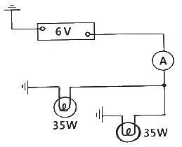
- 10.6
- 11.6
- 12.6
- 13.6
(정답률: 60%)
87. 충전장치에서 발전기 내부의 IC레귤레이터가 불량하여 배터리가 과충전 될 수 있는 경우는?
- 트랜지스터가 파손되어 로터코일에 전류가 흐르지 않는다.
- 여자(조정)다이오드가 파손되어 배터리에서 스테이터로 전류가 흐른다.
- 제너 다이오드가 파손되어 로터코일에 전류가 계속 흐르게 한다.
- 로터코일이 단락되어 자화 효과가 커지면서 스테이터에서 과전류가 출력된다.
(정답률: 67%)
88. 자동차 CAN통신의 CLASS구분으로 가장 거리가 먼 것은? (단, SAE 기준이다.)
- CLASS A : 접지를 기준으로 1개의 와이어링으로 통신선을 구성하고, 진단통신에 응용되며 K-라인 통신이 이에 해당 된다.
- CLASS B : CLASS A 보다 많은 정보의 전송이 필요한 경우에 사용되며, 바디전장 및 클라스터 등에 사용되며 저속 CAN에 적용된다.
- CLASS C : 실시간으로 중대한 정보교환이 필요한 경우로서 1~10 ms 간격으로 데이터 전송주기가 필요한 경우에 사용되며 파워트레인 계통에서 응용되고 고속 CAN통신에 적용된다.
- CLASS D : 수백 수천 bits의 블록단위 데이터 전송이 필요한 경우에 사용되며, 멀티미디어 통신에 응용되며 FlexRay 통신에 적용된다.
(정답률: 42%)
89. 에어백이 장착된 차량의 계기판에 에어백 경고등이 점등되는 원인으로 틀린 것은?
- 클럭 스프링 단선
- 점화 스위치 불량
- 충돌감지 센서 불량
- 에어백 모듈 제어선 단락
(정답률: 67%)
90. 자동차종합검사규칙상 자동차검사 전산정보처리조직과 실시간으로 통신이 가능하고 측정 결과등이 실시간으로 자동입력되어야 하는 종합검사시설이 아닌 것은?
- 검사장면 촬영용 카메라
- 전자장치 진단기
- 전조등 시험기
- 소음 측정기
(정답률: 40%)
91. 공조장치에서 R-134a 냉매의 특징으로 틀린 것은?
- 가연성이다.
- 오존을 파괴하는 염소가 없다.
- R-12와 유사한 열역학적 성질을 가지고 있다.
- 다른 물질과 쉽게 반응하지 않는 안정된 분자구조로 되어 있다.
(정답률: 30%)
92. 하이브리드 자동차의 특징이 아닌 것은?
- 희생제동
- 2개의 동력원으로 주행
- 저전압 배터리와 고전압 배터리 사용
- 고전압 배터리 충전을 위해 LDC(저전압 직류변환장치)를 사용
(정답률: 50%)
93. AQS(Air Quality System)에 대한 설명으로 옳은 것은?
- 실내·외 온도를 일정하게 유지
- 내부 공기를 일정한 세기로 순환
- 내부 공기를 밖으로 배출되는 것을 방지
- 유해 가스를 감지하여 차량 실내로 유입되는 것을 방지
(정답률: 67%)
94. 그림과 같이 10Ω, 20Ω, 30Ω의 저항이 병렬로 연결되어 전류계와 함께 배터리에 연결되어 있을 때 전류계에 흐르는 전류(A)는?
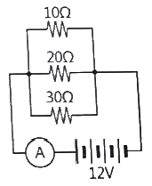
- 2.2
- 5.5
- 20
- 65.5
(정답률: 20%)
95. 완전충전된 상태의 배터리가 방전종지전압까지 방전하는 데 걸린 전류와 시간이 20A, 5시간이고, 방전종지전압 상태에서 다시 완전 충전하는데 걸린 전류와 시간이 15A, 8시간 이라면 AH효율은 약 얼마인가?
- 57%
- 83%
- 120%
- 175%
(정답률: 59%)
96. 엔진 회전수를 감지하는 센서의 종류로 틀린 것은?
- 전위차계
- 홀 센서
- 전자 유도식 회전센서
- 광학식 회전센서
(정답률: 46%)
97. 역발향의 전압이 어떤 값에 도달하면 역방향 전류가 급격히 증가하여 흐르게 되는 다이오드는?
- 발광 다이오드
- 포토 다이오드
- 제너 다이오드
- 트리 다이오드
(정답률: 75%)
98. 전자제어 가솔린 엔진에서 노킹 발생 시 점화시기 제어로 옳은 것은?
- 점화시기 고정
- 점화시기 가속
- 점화시기 지각
- 점화시기 진각
(정답률: 50%)
99. IC(집적회로)의 장점이 아닌 것은?
- 소형·경량이다.
- 납땜 부위가 적어 고장이 적다.
- 대용량의 축전기 IC화에 적합하다.
- 진동에 강하고 소비전력이 매우 적다.
(정답률: 67%)
100. 자동차용 납산배터리에 관한 설명으로 틀린 것은?
- 설페이션 현상 – 축전지를 방전상태로 장기간 방치하면 극판이 불활성 물질로 덮이는 현상이다.
- 기전력 – 축전지의 기전력은 셀 당 약 2.1V 이지만 전해액 비중, 전해액 온도, 방전량 등에 영향을 받는다.
- 방전종지전압 – 일정 전압 이하로 과방전을 하게 되면, 축전지의 극판을 손상시키므로 방전한계를 규정한 전압이다.
- 용량(capacity) - 완전 충전 된 축전지를 일정전압으로 단계별 방전하여 방전종지전압까지 방전했을 때의 전기량으로 AV로 표시한다.
(정답률: 59%)